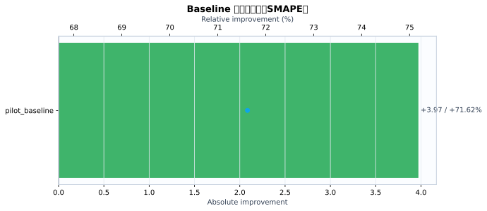
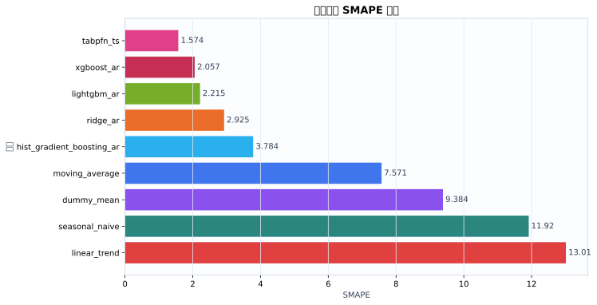
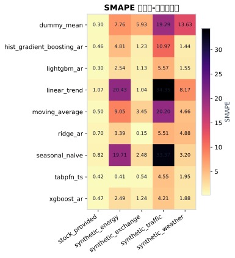
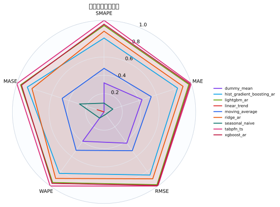
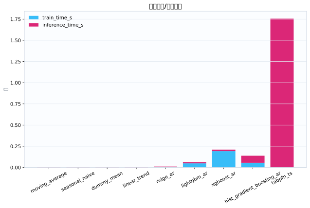
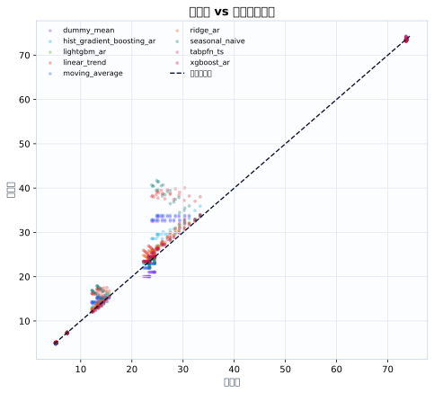
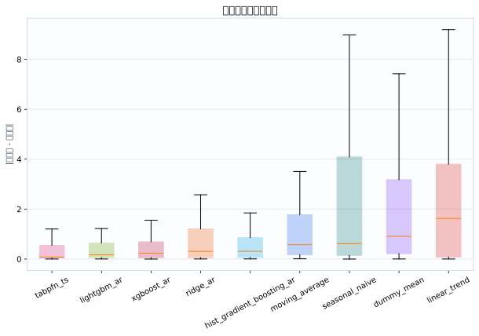

数据集5
模型9
指标行数45
预测行数1080
结论摘要
- 主指标 SMAPE 下，当前 run 的最佳模型是 tabpfn_ts，平均值为 1.574。
- 相对 baseline pilot_baseline，当前最佳模型在 SMAPE 上提升 71.62% （absolute=+3.971）。
核心指标卡片
SMAPE
1.574
最佳模型: tabpfn_ts
GPU_MEMORY_MB
0
最佳模型: dummy_mean
INFERENCE_TIME_S
0.00256
最佳模型: moving_average
MAE
0.3935
最佳模型: tabpfn_ts
MASE
0.7941
最佳模型: tabpfn_ts
MSE
0.4015
最佳模型: xgboost_ar
RMSE
0.4815
最佳模型: tabpfn_ts
TRAIN_TIME_S
0
最佳模型: tabpfn_ts
Baseline 对比
| baseline | metric | current_model | current_value | baseline_model | baseline_value | absolute_difference | relative_improvement_pct |
|---|---|---|---|---|---|---|---|
| pilot_baseline | smape | tabpfn_ts | 1.574 | ridge_ar | 5.545 | 3.971 | 71.62 |
动态交互图表
指标排名动态图
残差直方图
效率-精度散点图
数据集排名轨迹
Matplotlib 可视化图表
Baseline 改变量图
{kind=link}

Baseline/模型平均指标柱状图
{kind=link}

数据集-模型热力图
{kind=link}

多指标雷达图
{kind=link}

运行时间图
{kind=link}

真实值-预测值散点图
{kind=link}

残差箱线图
{kind=link}

训练过程曲线
N/A：当前 run 目录未发现 loss/accuracy/TensorBoard/wandb 训练曲线文件。
错误分析与样本分析
当前支持预测任务的残差与真实-预测散点分析；分类 confusion matrix / ROC / PR 曲线需要真实分类输出后自动启用。
原始 Metrics
| run_id | model | dataset | domain | horizon | context_length | mse | mae | rmse | smape | wape | mase | train_time_s | inference_time_s | gpu_memory_mb |
|---|---|---|---|---|---|---|---|---|---|---|---|---|---|---|
| tabpfn_ts_20260528_112700 | dummy_mean | synthetic_energy | energy | 12 | 48 | 1.559 | 1.075 | 1.249 | 7.765 | 7.909 | 2.449 | 0.0004246 | 0.002806 | 0 |
| tabpfn_ts_20260528_112700 | seasonal_naive | synthetic_energy | energy | 12 | 48 | 11.04 | 2.965 | 3.322 | 19.71 | 21.82 | 6.756 | 0.0002772 | 0.002301 | 0 |
| tabpfn_ts_20260528_112700 | moving_average | synthetic_energy | energy | 12 | 48 | 2.088 | 1.264 | 1.445 | 9.052 | 9.303 | 2.881 | 0.0002848 | 0.002313 | 0 |
| tabpfn_ts_20260528_112700 | linear_trend | synthetic_energy | energy | 12 | 48 | 10.13 | 3.067 | 3.183 | 20.43 | 22.57 | 6.988 | 0.0002687 | 0.002652 | 0 |
| tabpfn_ts_20260528_112700 | ridge_ar | synthetic_energy | energy | 12 | 48 | 0.4211 | 0.4771 | 0.6489 | 3.391 | 3.512 | 1.087 | 0.004083 | 0.006155 | 0 |
| tabpfn_ts_20260528_112700 | hist_gradient_boosting_ar | synthetic_energy | energy | 12 | 48 | 0.5216 | 0.661 | 0.7222 | 4.809 | 4.864 | 1.506 | 0.09935 | 0.09679 | 0 |
| tabpfn_ts_20260528_112700 | lightgbm_ar | synthetic_energy | energy | 12 | 48 | 0.1602 | 0.3504 | 0.4002 | 2.539 | 2.579 | 0.7985 | 0.06968 | 0.01652 | 0 |
| tabpfn_ts_20260528_112700 | xgboost_ar | synthetic_energy | energy | 12 | 48 | 0.1521 | 0.3322 | 0.39 | 2.493 | 2.445 | 0.7569 | 0.2851 | 0.01786 | 0 |
| tabpfn_ts_20260528_112700 | tabpfn_ts | synthetic_energy | energy | 12 | 48 | 0.003626 | 0.05532 | 0.06022 | 0.4107 | 0.4071 | 0.1261 | 0 | 2.436 | 0 |
| tabpfn_ts_20260528_112700 | dummy_mean | synthetic_traffic | traffic | 12 | 48 | 39.33 | 5.702 | 6.271 | 19.29 | 20.86 | 4.113 | 0.0004464 | 0.00237 | 0 |
| tabpfn_ts_20260528_112700 | seasonal_naive | synthetic_traffic | traffic | 12 | 48 | 145.5 | 10.93 | 12.06 | 33.37 | 40 | 7.887 | 0.0004039 | 0.002397 | 0 |
| tabpfn_ts_20260528_112700 | moving_average | synthetic_traffic | traffic | 12 | 48 | 42.87 | 6.005 | 6.548 | 20.2 | 21.97 | 4.332 | 0.0002862 | 0.002429 | 0 |
| tabpfn_ts_20260528_112700 | linear_trend | synthetic_traffic | traffic | 12 | 48 | 133.9 | 11.2 | 11.57 | 34.35 | 40.97 | 8.078 | 0.0002942 | 0.002678 | 0 |
| tabpfn_ts_20260528_112700 | ridge_ar | synthetic_traffic | traffic | 12 | 48 | 2.481 | 1.515 | 1.575 | 5.507 | 5.541 | 1.092 | 0.003923 | 0.006258 | 0 |
| tabpfn_ts_20260528_112700 | hist_gradient_boosting_ar | synthetic_traffic | traffic | 12 | 48 | 10.9 | 3.096 | 3.301 | 10.97 | 11.33 | 2.233 | 0.04338 | 0.07806 | 0 |
| tabpfn_ts_20260528_112700 | lightgbm_ar | synthetic_traffic | traffic | 12 | 48 | 2.752 | 1.535 | 1.659 | 5.565 | 5.615 | 1.107 | 0.04217 | 0.01439 | 0 |
| tabpfn_ts_20260528_112700 | xgboost_ar | synthetic_traffic | traffic | 12 | 48 | 1.424 | 1.152 | 1.193 | 4.209 | 4.215 | 0.831 | 0.1641 | 0.01691 | 0 |
| tabpfn_ts_20260528_112700 | tabpfn_ts | synthetic_traffic | traffic | 12 | 48 | 2.14 | 1.255 | 1.463 | 4.55 | 4.592 | 0.9054 | 0 | 1.506 | 0 |
| tabpfn_ts_20260528_112700 | dummy_mean | synthetic_weather | weather | 12 | 48 | 9.207 | 3.007 | 3.034 | 13.63 | 12.77 | 14.69 | 0.0003687 | 0.002358 | 0 |
| tabpfn_ts_20260528_112700 | seasonal_naive | synthetic_weather | weather | 12 | 48 | 0.7422 | 0.7493 | 0.8615 | 3.199 | 3.183 | 3.66 | 0.0002768 | 0.002494 | 0 |
| tabpfn_ts_20260528_112700 | moving_average | synthetic_weather | weather | 12 | 48 | 1.325 | 1.076 | 1.151 | 4.664 | 4.57 | 5.256 | 0.000287 | 0.002439 | 0 |
| tabpfn_ts_20260528_112700 | linear_trend | synthetic_weather | weather | 12 | 48 | 4.992 | 2.008 | 2.234 | 8.17 | 8.529 | 9.809 | 0.0002672 | 0.002619 | 0 |
| tabpfn_ts_20260528_112700 | ridge_ar | synthetic_weather | weather | 12 | 48 | 1.994 | 1.175 | 1.412 | 4.875 | 4.993 | 5.742 | 0.003623 | 0.006322 | 0 |
| tabpfn_ts_20260528_112700 | hist_gradient_boosting_ar | synthetic_weather | weather | 12 | 48 | 0.1482 | 0.3385 | 0.385 | 1.442 | 1.438 | 1.654 | 0.04301 | 0.07749 | 0 |
| tabpfn_ts_20260528_112700 | lightgbm_ar | synthetic_weather | weather | 12 | 48 | 0.2202 | 0.363 | 0.4692 | 1.545 | 1.542 | 1.773 | 0.04205 | 0.01441 | 0 |
| tabpfn_ts_20260528_112700 | xgboost_ar | synthetic_weather | weather | 12 | 48 | 0.3579 | 0.4423 | 0.5982 | 1.878 | 1.879 | 2.161 | 0.1612 | 0.01797 | 0 |
| tabpfn_ts_20260528_112700 | tabpfn_ts | synthetic_weather | weather | 12 | 48 | 0.3464 | 0.4599 | 0.5885 | 1.951 | 1.954 | 2.247 | 0 | 1.386 | 0 |
| tabpfn_ts_20260528_112700 | dummy_mean | synthetic_exchange | economics | 12 | 48 | 0.09117 | 0.2964 | 0.3019 | 5.926 | 5.761 | 6.768 | 0.0003734 | 0.002367 | 0 |
| tabpfn_ts_20260528_112700 | seasonal_naive | synthetic_exchange | economics | 12 | 48 | 0.02396 | 0.1259 | 0.1548 | 2.48 | 2.447 | 2.874 | 0.0002773 | 0.00251 | 0 |
| tabpfn_ts_20260528_112700 | moving_average | synthetic_exchange | economics | 12 | 48 | 0.03386 | 0.1748 | 0.184 | 3.45 | 3.397 | 3.991 | 0.0002666 | 0.002413 | 0 |
| tabpfn_ts_20260528_112700 | linear_trend | synthetic_exchange | economics | 12 | 48 | 0.003435 | 0.05352 | 0.05861 | 1.04 | 1.04 | 1.222 | 0.0002806 | 0.002629 | 0 |
| tabpfn_ts_20260528_112700 | ridge_ar | synthetic_exchange | economics | 12 | 48 | 7.115e-05 | 0.007791 | 0.008435 | 0.1514 | 0.1514 | 0.1779 | 0.003673 | 0.006254 | 0 |
| tabpfn_ts_20260528_112700 | hist_gradient_boosting_ar | synthetic_exchange | economics | 12 | 48 | 0.005679 | 0.06343 | 0.07536 | 1.235 | 1.233 | 1.448 | 0.0429 | 0.07831 | 0 |
| tabpfn_ts_20260528_112700 | lightgbm_ar | synthetic_exchange | economics | 12 | 48 | 0.004713 | 0.05787 | 0.06865 | 1.126 | 1.125 | 1.321 | 0.04185 | 0.01432 | 0 |
| tabpfn_ts_20260528_112700 | xgboost_ar | synthetic_exchange | economics | 12 | 48 | 0.005745 | 0.06353 | 0.07579 | 1.237 | 1.235 | 1.451 | 0.1746 | 0.0204 | 0 |
| tabpfn_ts_20260528_112700 | tabpfn_ts | synthetic_exchange | economics | 12 | 48 | 0.001143 | 0.02778 | 0.0338 | 0.539 | 0.54 | 0.6344 | 0 | 1.719 | 0 |
| tabpfn_ts_20260528_112700 | dummy_mean | stock_provided | finance | 12 | 48 | 0.008326 | 0.06505 | 0.09125 | 0.2997 | 0.1606 | 0.02217 | 0.0004965 | 0.003259 | 0 |
| tabpfn_ts_20260528_112700 | seasonal_naive | stock_provided | finance | 12 | 48 | 0.09722 | 0.2158 | 0.3118 | 0.8207 | 0.533 | 0.07355 | 0.0003714 | 0.003371 | 0 |
| tabpfn_ts_20260528_112700 | moving_average | stock_provided | finance | 12 | 48 | 0.01478 | 0.09729 | 0.1216 | 0.495 | 0.2403 | 0.03316 | 0.0003592 | 0.003207 | 0 |
| tabpfn_ts_20260528_112700 | linear_trend | stock_provided | finance | 12 | 48 | 0.01865 | 0.1221 | 0.1366 | 1.07 | 0.3016 | 0.04163 | 0.000372 | 0.003491 | 0 |
| tabpfn_ts_20260528_112700 | ridge_ar | stock_provided | finance | 12 | 48 | 0.03812 | 0.1588 | 0.1952 | 0.7022 | 0.3921 | 0.05411 | 0.00492 | 0.008525 | 0 |
| tabpfn_ts_20260528_112700 | hist_gradient_boosting_ar | stock_provided | finance | 12 | 48 | 0.01153 | 0.08194 | 0.1074 | 0.4617 | 0.2024 | 0.02793 | 0.04802 | 0.08432 | 0 |
| tabpfn_ts_20260528_112700 | lightgbm_ar | stock_provided | finance | 12 | 48 | 0.004732 | 0.05374 | 0.06879 | 0.2992 | 0.1327 | 0.01831 | 0.04526 | 0.01697 | 0 |
| tabpfn_ts_20260528_112700 | xgboost_ar | stock_provided | finance | 12 | 48 | 0.06815 | 0.1792 | 0.2611 | 0.467 | 0.4424 | 0.06105 | 0.1746 | 0.02003 | 0 |
| tabpfn_ts_20260528_112700 | tabpfn_ts | stock_provided | finance | 12 | 48 | 0.06867 | 0.1691 | 0.262 | 0.417 | 0.4176 | 0.05763 | 0 | 1.731 | 0 |
配置参数
展开/折叠配置
{
"/home/wanyi/zy_test/tabpfn-ts-benchmark/configs/config.yaml": {
"defaults": [
{
"dataset": "etth1"
},
{
"model": "seasonal_naive"
},
{
"experiment": "e1_zeroshot"
},
"_self_"
],
"seed": 42,
"output_dir": "results",
"wandb": {
"project": "tabpfn-quant",
"mode": "offline",
"entity": null
},
"hydra": {
"run": {
"dir": "outputs/${now:%Y-%m-%d}/${now:%H-%M-%S}"
}
}
}
}运行环境
{
"python": "3.10.12",
"platform": "Linux-6.8.0-111-generic-x86_64-with-glibc2.35",
"git_head": "N/A",
"git_dirty": false
}Warnings
- 无
产物链接
- metrics.json
- summary.csv
- 源 run 目录: /home/wanyi/zy_test/tabpfn-ts-benchmark/results/full_benchmark_v1_c48_h12_s2
- 主指标: smape